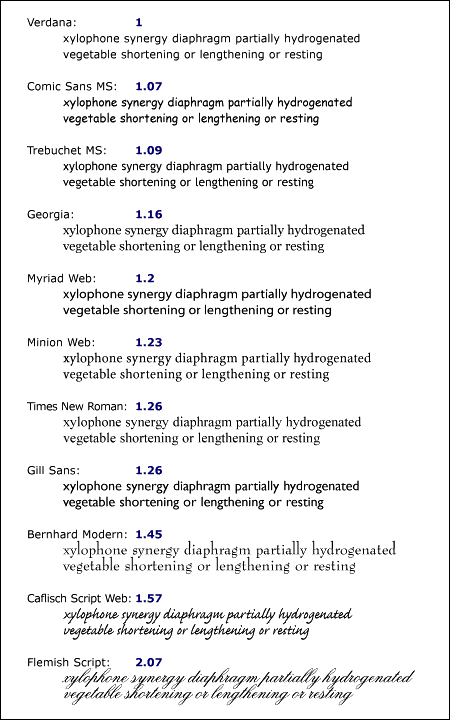

Contenidos
Cuando el texto de un documento va a ser desplegado visualmente, a los caracteres (elementos abstractos de información) se le deben asignar signos abstractos. Uno o más caracteres pueden ser representados por uno o más signos abstractos, de un modo, tal vez, dependiente del contexto. Una signo es la representación artística concreta de un signo abstracto, en cierto estilo tipográfico, en forma de contorno o mapa de bits que puede dibujarse en la pantalla o en papel. Una fuente es un conjunto de signos, observando todos ellos el mismo motivo básico de acuerdo al diseño, tamaño, apariencia y otros atributos asociados a todo el conjunto, y una asignación de signos abstractos por cada carácter.
Una aplicación del usuario visual debe resolver las siguientes cuestiones antes de procesar visualmente un carácter:
En ambos, CSS1 y CSS2, los autores especifican las características de una fuente a través de una serie de propiedades de la fuente.
El modo en que las aplicaciones del usuario operan estas propiedades, cuando en el sistema cliente no existe una fuente equivalente, se ha ampliado entre CSS1 y CSS2. En CSS1, se asumía que todas las fuentes estaban presentes en el sistema cliente y eran identificadas solamente por su nombre. Podían especificarse fuentes alternativas por medio de las propiedades, pero más allá de eso, las aplicaciones del usuario no tenían ninguna manera de proponer otra fuente al usuario (incluso fuentes estilísticamente similares que la aplicación del usuario tenía disponible) más allá de las fuentes genéricas predefinidas.
CSS2 cambia todo esto y concede mucha más libertad a:
CSS2 mejora la equivalencia de fuentes en el sistema cliente, permite el sintetizado de fuentes y el procesamiento progresivo, y posibilita que las fuentes sean bajadas de la Web. Estas capacidades mejoradas son aludidas como 'Fuentes Web'.
En el modelo de fuente CSS2, como en CSS1, cada aplicación del usuario tiene una "base de datos de fuentes" a su disposición. CSS1 se refería a esta base de datos pero no daba detalle de lo que había en ella. CSS2 define la información de esa base de datos y permite a los autores de hojas de estilo aportar a la misma. Cuando se le solicita mostrar un carácter con una fuente particular, la aplicación del usuario primero identifica en la base de datos la fuente que "más se asemeja" con la fuente especificada (de acuerdo con el algoritmo de equivalencia de fuentes). Una vez que ha identificado una fuente, recupera los datos de la fuente localmente o desde la Web y puede mostrar el carácter usando esos signos.
Como consecuencia de este modelo, hemos organizado la especificación en dos secciones. La primera concierne a los mecanismos de especificación de fuentes, por los cuales los autores especifican qué fuentes desearían que fueran usadas. La segunda es respecto al mecanismo de selección de fuentes, por cuyo medio las aplicaciones del usuario del sistema cliente identifican y cargan la fuente que mejor equivale con la especificación del autor.
El modo en que las aplicaciones del usuario construyen la base de datos está fuera del alcance de esta especificación toda vez que la implementación de bases de datos depende de factores tales como el sistema operativo o el tipo de cliente.
La primer etapa del mecanismo de fuente de CSS tiene que ver con el modo en que los autores de hojas de estilo especifican cuáles fuentes deben ser usadas por una aplicación del usuario. En principio, parece que la manera obvia de especificar una fuente es por su nombre, una cadena simple -que da la impresión de estar separada en distintas partes-, por ejemplo "BT Swiss 721 Heavy Italic".
Desafortunadamente, no existe una taxonomía bien definida y universalmente aceptada para la clasificación de las fuentes en base a sus nombres, y los términos aplicados al nombre de una familia de fuentes pueden no ser apropiados para otras. Por ejemplo, el término 'itálica' es usado comúnmente para definir al texto inclinado, pero el texto inclinado también puede denominarse oblicuo, sesgado, inclinado o cursivo. De modo similar, los nombre de las fuentes típicamente contienen términos que describen el "peso" de una fuente. El principal rol de estos nombres es distinguir versiones de distinta densidad dentro de una misma familia de fuentes. No hay expresiones universalmente aceptadas para los distintos pesos y su utilización varía enormemente. Por ejemplo, una fuente que podría considerarse como negrita puede ser descripta como regular, media, semi-negra o ultra-negra, dependiendo de cuán negra sea la versión "normal" de la fuente dentro del diseño.
Esta ausencia de una denominación sistemática imposibilita, dentro del marco general, componer el nombre de una tipografía modificada que difiera en un sentido particular, como ser más negra.
Debido a esto, CSS usa un modelo diferente. Las fuentes son solicitadas no a través del simple nombre de la fuente sino por la vía de establecer una serie de propiedades de la fuente. Estos valores de las propiedades forman la base del mecanismo de selección de fuentes de las aplicaciones del usuario. Las propiedades de la fuente pueden modificarse individualmente, por ejemplo para aumentar la densidad, y el nuevo conjunto de valores de las propiedades de la fuente será usado entonces para seleccionar nuevamente de la base de datos de las fuentes. El resultado es un incremento en la regularidad para los autores de hojas de estilo y los implementadores, y un aumento en la solidez.
CSS2 especifica las fuentes de acuerdo a estas características:
En todas las propiedades, excepto 'font-size', los valores de las medidas 'em' y 'ex' se refieren al tamaño de fuente del elemento actual. Para 'font-size', estas unidades de medida se refieren al tamaño de fuente del elemento padre. Por favor, consulte la sección sobre unidades de medida para más información.
Las propiedades de las fuentes en CSS son usadas para describir la apariencia deseada para el texto del documento. Los descriptores de las fuentes, por el contrario, son usados para describir las características de las fuentes, de modo que pueda elegirse una fuente conveniente para crear la apariencia deseada. Por información acerca de la clasificación de las fuentes, por favor, consulte la sección sobre descriptores de fuentes.
| Value: | [[ <nombre-de-la-familia> | <familia-genérica> ],]* [<nombre-de-la-familia> | <familia-genérica>] | inherit |
| Inicial: | depende de la aplicación del usuario |
| Se aplica a: | todos los elementos |
| Se hereda: | si |
| Porcentajes: | N/A |
| Medios: | visuales |
Esta propiedad especifica una lista de prioridades de nombres de familias de fuentes y/o nombres de familias genéricas. Para resolver el problema de que una sola fuente puede carecer de signos para mostrar todos los caracteres en un documento, o de que no todas las fuentes están disponibles en todos los sistemas, esta propiedad permite a los autores especificar un listado de fuentes, todas del mismo estilo y tamaño, que son probadas en sucesión para ver si contienen un signo para cierto carácter. Esta lista se llama un juego de fuentes.
Por ejemplo, un texto que contiene palabras en castellano mezcladas con símbolos matemáticos puede necesitar un juego de dos fuentes, una conteniendo letras y números latinos, la otra conteniendo los símbolos matemáticos. Aquí hay un ejemplo de un juego de fuentes conveniente para un texto que se espera que contenga caracteres latinos, en japonés y símbolos matemáticos:
BODY { font-family: Baskerville, "Heisi Mincho W3", Symbol, serif }
Los signos disponibles en la "Baskerville" (una fuente que cubre sólo los caracteres latinos) se tomarán de esa fuente, los signos japoneses serán tomados de la "Heisi Mincho W3" y los símbolos matemáticos vendrán de la "Symbol". Cualquier otra vendrá de la familia genérica 'serif'.
La familia genérica de fuentes se usará si una o más de las otras fuentes del juego de fuentes no está disponible. Aunque muchas fuentes proporcionan un signo para los "caracteres ausentes", típicamente un rectángulo blanco, como su nombre lo indica éste no debe ser considerada una equivalencia excepto en la última fuente de un juego de fuentes.
Hay dos tipos de nombres de familias de fuentes:
Se exhorta a los autores a ofrecer una familia genérica de fuentes como última alternativa, para lograr mayor solidez.
Por ejemplo:
<!DOCTYPE HTML PUBLIC "-//W3C//DTD HTML 4.0//EN">
<HTML>
<HEAD>
<TITLE>Prueba de fuentes</TITLE>
<STYLE type="text/css">
BODY { font-family: "new century schoolbook", serif }
</STYLE>
</HEAD>
<BODY>
<H1 style="font-family: 'Mi propia fuente', fantasy">Prueba</H1>
<P>¿Qué hay de nuevo, viejo?
</BODY>
</HTML>
La enriquecida sintaxis del selector CSS2 puede usarse para crear una tipografía sensible al idioma. Por ejemplo, algunos caracteres chinos y japoneses son unificados para tener la misma posición en Unicode, aunque los signos abstractos no sean iguales en los dos idiomas.
*:lang(ja-jp) { font: 900 14pt/16pt "Heisei Mincho W9", serif }
*:lang(zh-tw) { font: 800 14pt/16.5pt "Li Sung", serif }
Esto selecciona cualquier elemento que está en el idioma dado -japonés o chino tradicional- y solicita la fuente apropiada.
| Valor: | normal | italic | oblique | inherit |
| Inicial: | normal |
| Se aplica a: | todos los elementos |
| Se hereda: | si |
| Porcentajes: | N/A |
| Medios: | visuales |
La propiedad 'font-style' solicita la versión normal de una fuente (llamada también "romana" o "redonda") dentro de una familia. Los valores tienen los siguientes significados:
En este ejemplo, el texto normal en un elemento H1, H2 o H3 será mostrado con una fuente itálica. Sin embargo el texto enfatizado (EM) dentro de un elemento H1 aparecerá en una versión normal.
H1, H2, H3 { font-style: italic }
H1 EM { font-style: normal }
| Value: | normal | small-caps | inherit |
| Inicial: | normal |
| Se aplica a: | todos los elementos |
| Se hereda: | si |
| Porcentajes: | N/A |
| Medios: | visuales |
En una fuente small-caps, los signos para la letras minúsculas son iguales a las mayúsculas, pero en un tamaño menor y con proporciones ligeramente diferentes (en castellano se denominan versales o versalitas). La propiedad 'font-variant' solicita tales fuentes para los sistemas de "doble caja" (que tiene dos cajas, como la letra latina). Esta propiedad no tiene efectos visibles en escrituras de caja única (que contienen sólo una caja, como en la mayoría de los sistemas de escritura del mundo). Los valores tienen los siguientes significados:
|
Nota de la traducción: Por sistemas de caja doble se entienden aquellos que tienen dos versiones -o más- de cada letra (en la escritura latina, mayúsculas y minúsculas). Los sistemas de caja única son aquellos que tienen una sola versión de letras. Los términos utilizados en inglés ("bicameral" y "unicameral") no significan demasiado en castellano, por lo que se prefirió utilizar la denominación "caja" ya que en la jerga tipográfica aún se estila denominar a las minúsculas como de "caja baja" y de "caja alta" a las mayúsculas (denominaciones derivadas del antiguo sistema de composición con tipos móviles). |
El resultado del siguiente ejemplo es un elemento H3 en versalitas con las palabras enfatizadas (EM) en versalitas oblicuas:
H3 { font-variant: small-caps }
EM { font-style: oblique }
En la medida en que esta propiedad provoca que el texto sea convertido a mayúsculas, se aplican las mismas consideraciones que para 'text-transform'.
| Valor: | normal | bold | bolder | lighter | 100 | 200 | 300 | 400 | 500 | 600 | 700 | 800 | 900 | inherit |
| Inicial: | normal |
| Se aplica a: | todos los elementos |
| Se hereda: | si |
| Porcentajes: | N/A |
| Medios: | visuales |
La propiedad 'font-weight' especifica el peso de una fuente. Los valores tienen los siguientes significados:
P { font-weight: normal } /* 400 */
H1 { font-weight: 700 } /* negrita */
BODY { font-weight: 400 }
STRONG { font-weight: bolder } /* 500 si está disponible */
Los elementos hijos heredan el valor computado del peso.
| Value: | normal | wider | narrower | ultra-condensed | extra-condensed | condensed | semi-condensed | semi-expanded | expanded | extra-expanded | ultra-expanded | inherit |
| Inicial: | normal |
| Se aplica a: | todos los elementos |
| Se hereda: | si |
| Porcentajes: | N/A |
| Medios: | visuales |
La propiedad 'font-stretch' selecciona un tipo normal, condensado o expandido de una familia de fuentes. Los valores de las palabras clave absolutas tienen el siguiente orden, del más estrecho al más ancho:
La palabra clave relativa 'wider' modifica el valor al siguiente más expandido por sobre el valor heredado (mientras no lo aumente por sobre 'ultra-expanded'); la palabra clave relativa 'narrower' modifica el valor al siguiente más condensado por debajo del valor heredado (mientras no lo disminuya por debajo de 'ultra-condensed').
| Valor: | <tamaño-absoluto> | <tamaño-relativo> | <medida> | <porcentaje> | inherit |
| Inicial: | medium |
| Se aplica a: | todos los elementos |
| Se hereda: | si, el valor computado es heredado |
| Porcentajes: | se refieren al tamaño de la fuente del elemento padre |
| Medios: | visuales |
Esta propiedad describe el tamaño de la fuente con un interlineado normal. Los valores tienen los siguientes significados:
[ xx-small | x-small | small | medium | large | x-large | xx-large ]
En una pantalla de computadora se sugiere un factor de 1.2 entre índices adyacentes; si la fuente 'medium' es de 12pt, la fuente 'large' debería ser de 14.4pt. Los diferentes medios pueden requerir distintos factores en su escala. Además, la aplicación del usuario debería tener en cuenta la calidad y disponibilidad de las fuentes cuando computa la tabla. La tabla puede diferir de una familia de fuentes a otra.
Nota. En CSS1, el factor sugerido entre índices adyacentes era 1.5 que la experiencia de los usuarios demostró era demasiado grande.
[ larger | smaller ]
Por ejemplo, si el elemento padre tiene una fuente de tamaño 'medium', un valor 'larger' hará que el tamaño de la fuente del elemento actual sea 'large'. Si el tamaño del elemento padre no es cercano a una entrada de la tabla, la aplicación del usuario es libre de interpolarlo en las entradas de la tabla o redondearlo a la más cercana. La aplicación del usuario puede tener que extrapolar valores de la tabla si los valores numéricos sobrepasan las palabras clave.
El valor real de esta propiedad puede diferir del valor computado debido a un valor numérico en 'font-size-adjust' y la indisponibilidad de ciertos tamaños de fuente.
Los elementos hijos heredan el valor computado de 'font-size' (de otro modo, el efecto de 'font-size-adjust' sería acumulado).
P { font-size: 12pt; }
BLOCKQUOTE { font-size: larger }
EM { font-size: 150% }
EM { font-size: 1.5em }
| Valor: | <número> | none | inherit |
| Inicial: | ninguno |
| Se aplica a: | todos los elementos |
| Se hereda: | si |
| Porcentajes: | N/A |
| Medios: | visuales |
En las escrituras de doble caja, el tamaño aparente y la legibilidad de una fuente depende menos de su valor 'font-size' (tamaño de la fuente) que del valor 'x-height' (altura de la x), o, mejor aún de la proporción entre estos dos valores, llamado el valor de relación (tamaño de la fuente dividido por la altura de la x). A mayor valor de relación es más probable que una fuente de pequeño tamaño resulte legible. Inversamente, tipos con un menor valor de relación se tornarán ilegibles más rápidamente por debajo de cierto tamaño límite que los tipos con un valor de relación más alto. Una franca sustitución de fuentes que descansa solamente en el tamaño de las mismas puede conducir a caracteres ilegibles.
Por ejemplo, la popular fuente Verdana tiene un valor de relación de 0.58; cuando el tamaño de la fuente Verdana tiene 100 unidades, la altura de la x es de 58 unidades. En comparación, la Times New Roman tiene un valor de relación de 0.46. La Verdana, por consiguiente, tenderá a mantener su legibilidad en cuerpos más pequeños que la Times New Roman. Inversamente, la Verdana a menudo parecerá 'demasiado grande' si sustituye a la Times New Roman en un tamaño determinado.
Esta propiedad permite a los autores especificar un valor de relación para un elemento que preserve la altura de la x de la fuente elegida en primera instancia en la fuente sustituta. Los valores tienen los siguientes significados:
y(a/a') = c
donde:
y = 'font-size' de la primera opción de fuentes a = valor de relación de la fuente seleccionada en primer término a' = valor de relación de la fuente disponible c = 'font-size' a aplicar a la fuente disponible
Por ejemplo, si la Verdana de 14px (con un valor de relación de 0.58) no está disponible y una fuente disponible tiene un valor de relación de 0.46, el tamaño de fuente de la sustituta debería ser 14* (0.58/0.46) = 17.65px.
Los ajustes de tamaño de las fuentes tienen lugar al computar el valor real de 'font-size'. Dado que la herencia está basada en el valor computado, los elementos hijos heredarán los valores sin ajustar.
La primer imagen abajo muestra varias tipografías rasterizadas en un mismo tamaño de fuente (11pt. a 72 ppi), junto con sus valores de relación. Ovserve que los tipos con un valor de relación más alto parecen más grandes que aquellos con valor bajo. Los tipos con muy bajo valor de relación son ilegibles en el tamaño mostrado.
La imagen siguiente muesta el resultado de 'font-size-adjust' (ajuste del tamaño de la fuente) donde la Verdana ha sido tomada como la "primera opción", junto con el factor de escala aplicado. A medida que son ajustados, los tamaños aparentes son bastante similares a través de todos los tipos, aunque el tamaño real (em) varía en más del 100%. Observe que 'font-size-adjust' tiende a estabilizar también la medida horizontal de las líneas.

| Valor: | [ [ <'font-style'> || <'font-variant'> || <'font-weight'> ]? <'font-size'> [ / <'line-height'> ]? <'font-family'> ] | caption | icon | menu | message-box | small-caption | status-bar | inherit |
| Inicial: | ver propiedades individuales |
| Se aplica a: | todos los elementos |
| Se hereda: | si |
| Porcentajes: | permitidos en 'font-size' y 'line-height' |
| Medios: | visuales |
La propiedad 'font' es, exceptuando los casos descriptos abajo, un resumen de la propiedad para determinar 'font-style', 'font-variant', 'font-weight', 'font-size', 'line-height' y 'font-family', en un mismo lugar en la hoja de estilo. La sintaxis de esta propiedad está basada en una notación extractada de la tipografía tradicional para determinar las múltiples propiedades relacionadas con las fuentes.
Todas las propiedades relacionadas con las fuentes son primero restablecidas a sus valores iniciales, incluyendo aquellas listadas en el párrafo anterior, más 'font-stretch' y 'font-size-adjust'. Entonces, aquellas propiedades que tienen asignados valores explícitos en la fórmula resumida 'font' son establecidas con esos valores. Por una definición de los valores iniciales y permitidos, vea las propiedades definidas anteriormente. Por razones de compatibilidad, no es posible establecer para 'font-stretch' y 'font-size-adjust' otros valores que no sean los iniciales usando la propiedad resumida 'font', en su lugar, establezca las propiedades individuales.
P { font: 12pt/14pt sans-serif }
P { font: 80% sans-serif }
P { font: x-large/110% "new century schoolbook", serif }
P { font: bold italic large Palatino, serif }
P { font: normal small-caps 120%/120% fantasy }
P { font: oblique 12pt "Helvetica Nue", serif; font-stretch: condensed }
En la segunda regla, el valor del porcentaje del tamaño de la fuente ('80%') se refiere al tamaño de fuente del elemento padre. En la tercer regla, el porcentaje de la altura de la línea ('110%') se refiere al tamaño de fuente del propio elemento.
Las primeras tres reglas no especifican 'font-variant' y 'font-weight' explícitamente, entonces estas propiedades reciben su valor inicial ('normal'). Observe que el nombre de la familia de fuentes "new century schoolbook", que contiene espacios, está entre comillas. La cuarta regla establece 'font-weight' como 'bold', 'font-style' como 'italic' e implícitamente establece 'font-variant' como 'normal'.
La quinta regla establece 'font-variant' ('small-caps'), the 'font-size' (120% del tamaño de fuente del elemento padre), 'line-height' (120% del tamaño de fuente) y 'font-family' ('fantasy'). Se entiende que la palabra clave 'normal' se aplica a las dos propiedades restantes: 'font-style' y 'font-weight'.
La sexta regla establece 'font-style', 'font-size' y 'font-family', a las otras propiedades de la fuente les serán aplicados sus valores iniciales. Luego establece 'font-stretch' como 'condensed' ya que esta propiedad no puede establecerse con ese valor usando la propiedad resumida 'font'.
Los siguientes valores se refieren a las fuentes del sistema:
Las fuentes del sistema sólo pueden asignarse como un conjunto; es decir, la familia, el tamaño, el peso, el estilo, etc. son establecidos al mismo tiempo. Estos valores pueden modificarse individualmente si se desea. Si en determinada plataforma no existe una fuente con las características indicadas, la aplicación del usuario debe realizar una sustitución inteligente (ej., una versión reducida de la fuente para 'caption' puede ser usada como fuente para 'smallcaption'), o sustituir la fuente predeterminada de la aplicación del usuario. Al igual que para las fuentes regulares, si, para una fuente del sistema, cualquiera de las propiedades individuales no formaran parte de las preferencias del usuario disponibles en el sistema operativo, esas propiedades deberán ser fijadas en sus valores iniciales.
Esta es la razón por la cual esta propiedad es "casi" una propiedad resumida: las fuentes del sistema sólo pueden ser especificadas con esta propiedad, no con 'font-family' en sí, de manera que 'font' permite a los autores hacer más cosas que con la suma de sus subpropiedades. Sin embargo, las propiedades individuales como 'font-weight' aún están dando valores tomados de la fuente del sistema, los cuales pueden ser variados independientemente.
BUTTON { font: 300 italic 1.3em/1.7em "FB Armada", sans-serif }
BUTTON P { font: menu }
BUTTON P EM { font-weight: bolder }
Si la fuente usada por los menúes desplegables en un sistema en particular pasó a ser, por ejemplo, la Charcoal de 9 puntos con un peso igual a 600, entonces los elementos P que sean descendientes de BUTTON serían mostrados como si esta regla estuviera en efecto:
BUTTON P { font: 600 9pt Charcoal }
Debido a que fórmula resumida 'font' restablece a su valor inicial cualquier propiedad sin un valor explícito dado, esto tiene el mismo efecto que esta declaración:
BUTTON P {
font-style: normal;
font-variant: normal;
font-weight: 600;
font-size: 9pt;
line-height: normal;
font-family: Charcoal
}
Las familias genéricas de fuentes son un mecanismo de apoyo, un medio para preservar algo de la intención de la hoja de estilo del autor cuando ninguna de las fuentes especificadas pueden ser seleccionadas. Para un óptimo control tipográfico, en las hojas de estilo deben usarse las fuentes con nombres propios.
Las cinco familias genéricas de fuentes se establecen para existir en todas las implementaciones CSS (estas no necesariamente tienen que asignar cinco fuentes concretas distintas). Las aplicaciones del usuario deben proveer de razonables opciones predeterminadas para las familias genéricas de fuentes, las cuales expresen las características de cada familia tanto como sea posible dentro de los límites permitidos por la tecnología subyacente.
Las aplicaciones del usuario son alentadas a permitir al usuario seleccionar opciones alternativas para las fuentes genéricas.
Los signos de las fuentes con serif, tal como el término es usado en CSS, tienen rasgos con remates, con terminaciones acampanadas o biseladas, o auténticas terminaciones con serif (incluyendo los serif cuadrados o slab serif). Las fuentes con serif son típicamente de espaciado proporcional. A menudo tienen mayor variación entre los rasgos finos y gruesos que las fuentes de las familias 'sans-serif'. CSS utiliza el término 'serif' para aplicar a una fuente en cualquier tipo de escritura, aunque otros nombres resulten más familiares para algunas escrituras en particular, como Mincho (Japonés), Sung o Song (Chino), Pathang (Coreano). Cualquier fuente descripta de este modo puede usarse para representar la familia genérica 'serif'.
Los ejemplos de fuentes que se ajustan a esta descripción incluyen:
| Fuentes latinas | Times New Roman, Bodoni, Garamond, Minion Web, ITC Stone Serif, MS Georgia, Bitstream Cyberbit |
| Fuentes griegas | Bitstream Cyberbit |
| Fuentes cirílicas | Adobe Minion Cyrillic, Excelcior Cyrillic Upright, Monotype Albion 70, Bitstream Cyberbit, ER Bukinst |
| Fuentes hebreas | New Peninim, Raanana, Bitstream Cyberbit |
| Fuentes japonesas | Ryumin Light-KL, Kyokasho ICA, Futo Min A101 |
| Fuentes árabes | Bitstream Cyberbit |
| Fuentes cherokee | Lo Cicero Cherokee |
Los signos de las fuentes sans-serif, tal como el término es usado en CSS, no tienen remates -sin formas acampanadas, trazos finales u otros ornamentos-. Las fuentes sans-serif son típicamente de espaciado proporcional. A menudo tienen menor variación entre los rasgos finos y gruesos, comparadas con las fuentes con serif. CSS utiliza el término 'sans-serif' para aplicar a una fuente en cualquier tipo de escritura, aunque otros nombres resulten más familiares para algunas escrituras en particular, como Gothic (Japonés), Kai (Chino), Totum o Kodig (Coreano). Cualquier fuente descripta de este modo puede usarse para representar la familia genérica 'sans-serif'.
Los ejemplos de fuentes que se ajustan a esta descripción incluyen:
| Fuentes latinas | MS Trebuchet, ITC Avant Garde Gothic, MS Arial, MS Verdana, Univers, Futura, ITC Stone Sans, Gill Sans, Akzidenz Grotesk, Helvetica |
| Fuentes griegas | Attika, Typiko New Era, MS Tahoma, Monotype Gill Sans 571, Helvetica Greek |
| Fuentes cirílicas | Helvetica Cyrillic, ER Univers, Lucida Sans Unicode, Bastion |
| Fuentes hebreas | Arial Hebrew, MS Tahoma |
| Fuentes japonesas | Shin Go, Heisei Kaku Gothic W5 |
| Fuentes árabes | MS Tahoma |
Los signos de las fuentes cursive, tal como el término es usado en CSS, generalmente tienen rasgos unidos u otra característica cursiva más marcada que los tipos itálicos. Los signos están parcial o completamente conectados y el resultado se asemeja más a la escritura manual o de pincel que a un tipo impreso. En algunos sistemas de escritura, como el arábigo, las fuentes son casi siempre cursivas. CSS usa el término 'cursive' para ser aplicado a una fuente en cualquier tipo de escritura, aunque otros nombres como Chancery, Brush, Swing y Script son también usados en los nombres de las fuentes.
Los ejemplos de fuentes que se ajustan a esta descripción incluyen:
| Fuentes latinas | Caflisch Script, Adobe Poetica, Sanvito, Ex Ponto, Snell Roundhand, Zapf-Chancery |
| Fuentes cirílicas | ER Architekt |
| Fuentes hebreas | Corsiva |
| Fuentes árabes | DecoType Naskh, Monotype Urdu 507 |
Las fuentes de fantasía, tal como el término es usado en CSS, son principalmente decorativas pero siguen representando caracteres (en oposición a las fuentes de símbolos, que no representan caracteres). Los ejemplos incluyen:
| Fuentes latinas | Alpha Geometrique, Critter, Cottonwood, FB Reactor, Studz |
El único criterio para reconocer una fuente monospace es que todas los signos ocupan un mismo espacio horizontal constante. (Esto puede hacer que algunos sistemas de escritra, como el arábigo, tengan un estilo más peculiar.) El efecto es similar al de las máquinas de escribir manuales y es a menudo utilizada para ilustrar los ejemplos de códigos de computadora.
Los ejemplos de fuentes que se ajustan a esta descripción incluyen:
| Fuentes latinas | Courier, MS Courier New, Prestige, Everson Mono |
| Fuentes griegas | MS Courier New, Everson Mono |
| Fuentes cirílicas | ER Kurier, Everson Mono |
| Fuentes japonesas | Osaka Monospaced |
| Fuentes cherokee | Everson Mono |
La segunda fase del mecanismo de fuentes de CSS2 concierne a la selección por parte de la aplicación del usuario de una fuente basada en las propiedades de la fuente especificadas por el autor, las fuentes disponibles, etc. Los detalles del algoritmo de equivalencias de fuentes se proporcionan a continuación.
Existen cuatro procedimientos posibles para la selección de fuentes: equivalencia de nombre, equivalencia inteligente, síntesis y transmisión.
El procesamiento progresivo es una combinación de transmisión y alguno de los otros métodos; provee una fuente sustituta temporaria (usando la equivalencia de nombre, equivalencia inteligente o la síntesis) para permitir que el contenido sea leído mientras la fuente solicitada es transmitida. Una vez que la fuente verdadera ha sido recuperada con éxito, reemplaza a la fuente temporaria, con la expectativa de que no sea necesario actualizar la pantalla.
Nota. El procesamiento progresivo necesita información sobre la métrica de la fuente para evitar la recomposición del contenido cuando la fuente real ha sido recuperada y procesada. Esta información acerca de la métrica es suficientemente elocuente por lo que sólo deberá ser especificada como máximo una vez por fuente en un documento.
La descripción de una fuente proporciona el puente entre la especificación de la fuente de un autor y los datos de la fuente, que son los datos necesarios para dar formato al texto y para procesar los signos abstractas que son asignados a los caracteres -los contornos escalables o los mapas de bits reales-. Las fuentes son referenciadas por las propiedades de las hojas de estilo.
La descripción de la fuente se agrega a la base de datos de la fuente y entonces es usado para seleccionar los datos relevantes de la fuente. La descripción de la fuente contiene descriptores como la ubicación de los datos de la fuente en la Web y la caracterización de esos datos de la fuente. Los descriptores de la fuente también se necesitan para comparar las propiedades de la fuente de la hoja de estilo con los datos de una fuente en particular. El nivel de detalle de la descripción de una fuente puede variar entre sólo el nombre de la fuente hasta una lista de las dimensiones de los signos.
Los descriptores de la fuente pueden ser clasificados en tres tipos:
Todos los descriptores de la fuente se especifican a través de la regla-arroba @font-face. La fórmula general es:
@font-face { <descripción-de-la-fuente> }
donde la <descripción-de-la-fuente> tiene la forma:
descriptor: valor; descriptor: valor; [...] descriptor: valor;
Cada regla @font-face especifica un valor para cada descriptor de la fuente, ya sea implícita o explícitamente. Aquellos valores que no son adjudicados explícitamente toman el valor inicial indicado para cada descriptor en esta especificación. Estos descriptores se aplican únicamente dentro del contexto de la regla @font-face en la cual son definidos, y no se aplican a los elementos del lenguaje de documento. De este modo, no hay noción de cuáles son los elementos a los que se aplican los descriptores, o si los valores son heredados por los elementos hijos.
Los descriptores de fuentes disponibles se describen en secciones posteriores en esta especificación.
Por ejemplo, aquí la fuente 'Robson Celtic' es definida y referenciada en una hoja de estilo contenida en un documento HTML.
<!DOCTYPE HTML PUBLIC "-//W3C//DTD HTML 4.0//EN">
<HTML>
<HEAD>
<TITLE>Prueba de fuente</TITLE>
<STYLE TYPE="text/css" MEDIA="screen, print">
@font-face {
font-family: "Robson Celtic";
src: url("http://site/fonts/rob-celt")
}
H1 { font-family: "Robson Celtic", serif }
</STYLE>
</HEAD>
<BODY>
<H1> Este título es mostrado usando la Robson Celtic</H1>
</BODY>
</HTML>
La hoja de estilo (en el elemento STYLE) contiene una regla CSS que especifica que todos los elementos H1 usarán la familia de fuentes 'Robson Celtic'.
Una implementación de CSS1 buscará en el cliente una fuente cuyo nombre de familia y otras propiedades sean equivalentes a la 'Robson Celtic' y, si no puede encontrarla, usará la fuente con serif de respaldo específica de la aplicación del usuario (la cuál está establecida para existir).
Una aplicación del usuario que implemente CSS2 primero examinará las reglas @font-face en busca de un descriptor de fuente definiendo la 'Robson Celtic'. Este ejemplo contiene una regla que se ajusta. Aunque esta regla no contiene demasiados datos de la fuente, tiene una URI donde la fuente puede ser recuperada para procesar este documento. Las fuentes transmitidas no deben hacerse disponibles para otras aplicaciones. Si no se encuentra una @font-face que coincida, la aplicación del usuario intentará encontrar una equivalente del mismo modo que una aplicación del usuario que implementa CSS1.
Observe que si la fuente 'Robson Celtic' hubiera sido instalada en el sistema cliente, esto habría provocado que la AU agregara una entrada en la base de datos de las fuentes para la copia instalada tal como se describe en la sección de algoritmo de equivalencia de fuentes. La copia instalada habría resultado la equivalente antes que la fuente a transmitir, en el ejemplo anterior.
Las implementaciones de CSS1, que no entienden la regla @font-face encontrarán la llave de apertura e ignorarán lo que sigue hasta la correspondiente llave de cierre. Esta regla-arroba está conforme a los requerimientos de CSS en cuanto al análisis con compatibilidad futura. Los analizadores pueden ignorar estas reglas sin provocar un error.
Teniendo los descriptores de la fuente separados de los datos de la fuente tiene un beneficio adicional además de permitir la selección y/o sustitución de la fuente. La protección de los datos y las restricciones de copia en los descriptores de fuentes puede ser mucho más débil que en los datos completos de la fuente. Así, es posible instalar la definición de la fuente localmente, o por lo menos mantenerla en un archivo temporal por si aparece en una hoja de estilo referenciada a menudo; esto no requerirá tener que acceder a la definición completa de la fuente a través de la Web más de una vez por fuente nombrada.
Si un descriptor de fuente está duplicado, el último en aparecer prevalece y el resto debe ignorarse.
También, cualquier descriptor que no es reconocido o útil para la aplicación del usuario se debe ignorar. Las futuras versiones de CSS pueden permitir descriptores adicionales con el propósito de mejorar la sustitución, equivalencia o síntesis de fuentes.
Los siguientes descriptores tienen el mismo nombre que las correspondientes propiedades de fuentes en CSS2, y tienen un solo valor o una lista de valores separados por coma.
Los valores de esa lista son, excepto cuando se señale explícitamente, los mismos que aquellos correspondientes a las propiedades en CSS2. Si hay un solo valor, ese es el valor que debe corresponder. Si hay una lista, cualquier ítem de la lista constituye el correspondiente. Si el descriptor es omitido en @font-face, se usa el valor inicial para el descriptor.
| Valor: | [ <nombre-de-la-familia> | <familia-genérica> ] [, [<nombre-de-la-familia> | <familia-genérica> ]]* |
| Inicial: | depende de la aplicación del usuario |
| Medios: | visuales |
Este es el descriptor para el nombre de la familia de fuentes de una fuente y toma los mismos valores que la propiedad 'font-family'.
| Valor: | all | [ normal | italic | oblique ] [, [normal | italic | oblique] ]* |
| Inicial: | all |
| Medios: | visuales |
Este es el descriptor para el estilo de una fuente y toma los mismos valores que la propiedad 'font-style', excepto que se permite una lista separada por comas.
| Valor: | [normal | small-caps] [,[normal | small-caps]]* |
| Inicial: | normal |
| Medios: | visuales |
Esta es la indicación CSS de si el tipo es la versión versalita de una fuente. Toma los mismo valores que la propiedad 'font-variant', excepto que se permite una lista separada por comas.
Nota. Los tipos cirílico pryamoĭ pueden ser descriptos en 'font-variant' como una variante small-caps, lo cuál le dará más consistencia con los tipos latinos (y el tipo kursiv que los acompaña descripto en 'font-style' con el estilo italic por la misma razón).
| Valor: | all | [normal | bold | 100 | 200 | 300 | 400 | 500 | 600 | 700 | 800 | 900] [, [normal | bold | 100 | 200 | 300 | 400 | 500 | 600 | 700 | 800 | 900]]* |
| Inicial: | all |
| Medios: | visuales |
Este es el descriptor para el peso de un tipo en relación a otros en la misma familia de fuentes. Toma los mismos valores que la propiedad 'font-weight' con tres excepciones:
| Valor: | all | [ normal | ultra-condensed | extra-condensed | condensed | semi-condensed | semi-expanded | expanded | extra-expanded | ultra-expanded ] [, [ normal | ultra-condensed | extra-condensed | condensed | semi-condensed | semi-expanded | expanded | extra-expanded | ultra-expanded] ]* |
| Inicial: | normal |
| Medios: | visuales |
Esta es la indicación en CSS de la naturaleza del condensado o expandido del tipo en relación a otros de la misma familia de fuentes. Toma los mismos valores que la propiedad 'font-stretch' excepto que:
| Valor: | all | <medida> [, <medida>]* |
| Inicial: | all |
| Medios: | visuales |
Este es el descriptor para los tamaños previstos para esta fuente. Sólo las unidades de medida absoluta son permitidos, en contraste con la propiedad 'font-size', que permite medidas y tamaños absolutos y relativos. Una lista de medidas absolutas separadas por comas es permitida.
El valor inicial 'all' es conveniente para la mayoría de las fuentes escalables, de manera que este descriptor es principalmente para usar @font-face con fuentes de mapas de bits, o fuentes escalables diseñadas para ser rasterizadas en un rango restringido de tamaños.
El siguiente descriptor es opcional dentro de la definición de la fuente, pero se usa para evitar la verificación o la transmisión de una fuente que no tiene los suficientes signos para procesar una carácter en particular.
| Valor: | <rango-u> [, <rango-u>]* |
| Inicial: | U+0-7FFFFFFF |
| Medios: | visuales |
Este es el descriptor para el rango de caracteres ISO 10646 cubiertos por la fuente.
Los valores de <rango-u> están expresados usando números hexadecimales precedidos por "U+", correspondiendo a las posiciones en el código de caracteres ISO 10646 ([ISO10646]).
Por ejemplo, U+05D1 es la 'letra hebrea bet' en caracteres ISO 10646. Para valores fuera del Plano Multilingual Básico (Basic Multilingual Plane o BMP), se anteponen números adicionales correspondientes al número de plano, como éste: U+A1234 que es el carácter en el Plano 10 en la posición hexadecimal 1234 del código. En el momento en que esto es escrito, no se han asignado caracteres fuera del BMP. Los ceros antepuestos (por ejemplo, 0000004D) son válidos, pero no requeridos.
El valor inicial de este descriptor cubre no sólo el Plano Multilingual Básico (BMP) completo, el cuál podría ser expresado como U+0-FFFF, sino también el repertorio completo de ISO 10646. De ese modo, el valor inicial expresa que la fuente puede tener signos para los caracteres en algún lugar de ISO 10646. Especificando un valor para 'unicode-range' provee información para hacer la búsqueda más eficiente, declarando un rango acotado en el que la fuente puede tener signos para los caracteres. La fuente no necesita efectuar la búsqueda de caracteres fuera de este rango.
Los valores pueden escribirse con cualquier número de dígitos. Para números simples, el carácter '?' se asume que significa 'cualquier valor', lo cuál crea un rango de posiciones de los caracteres. De este modo, usando un número simple:
Un par de números en este formato pueden combinarse con un guión para indicar rangos más extensos. Por ejemplo:
Pueden especificarse múltiples rangos discontínuos separados por una coma. Como sucede con otras listas separadas por comas en CSS, cualquier espacio en blanco antes y después de la coma es ignorado. Por ejemplo:
Una representación más adecuada para una fuente típicamente china podría ser:
unicode-range: U+3000-33FF, U+4E00-9FFF
El siguiente descriptor especifica el número de "unidades" por eme; estas unidades pueden ser usadas por algunos otros descriptores para expresar varias medidas, de modo que 'units-per-em' se requiere si otros descriptores dependen de él.
|
Nota de la traducción: La unidad de medida EM es lo que en la tipografía tradicional se conocía como "cuadratín", un cuadrado cuyo lado tiene igual medida que el cuerpo del tipo. No es la medida de la letra EME, sólo se toma esa letra para la denominación debido a que normalmente es la más ancha del alfabeto. |
| Valor: | <número> |
| Inicial: | indefinido |
| Medios: | visuales |
Este es el descriptor para el número de unidades coordinadas en el cuadrado eme, el tamaño de la grilla de diseño en la cuál los signos son trazados.
Este descriptor se requiere para referenciar los datos reales de la fuente, ya sea transmisibles o instalados localmente.
| Valor: | [ <uri> [formato(<cadena> [, <cadena>]*)] | <nombre-de-la-fuente> ] [, <uri> [formato(<cadena> [, <cadena>]*)] | <nombre-de-la-fuente> ]* |
| Inicial: | indefinido |
| Medios: | visuales |
Esto es una lista separada por comas con un orden de prioridades de referencias externas y/o nombres de fuentes instaladas localmente. La referencia externa apunta a los datos de la fuente en la Web. Esto se requiere si la Fuente Web será transmitida. Los recursos de la fuente puede ser un sub-conjunto de la fuente de orígen, por ejemplo puede contener sólo los signos necesarios para la página actual o para un conjunto de páginas.
La referencia externa consiste de un URI, seguido de una indicación opcional acerca del formato del recurso de la fuente que se encuentra en ese URI, y esta indicación deberá ser usada por los clientes para evitar la exploración de vínculos a fuentes en un formato inapropiado para el uso. Como con cualquier referencia en hipertexto, puede haber otros formatos disponibles, pero el cliente tiene una mejor idea acerca de lo que presuntamente va a encontrar, de una manera más sólida que intentando analizar las extensiones de archivos en los URI.
La indicación del formato contiene una lista de cadenas de formato separada por comas que denota formatos muy conocidos de fuentes. La aplicación del usuario reconocerá el nombre de los formatos de fuente que soporta, y evitará la transmisión de fuentes en formatos que no reconoce.
Una lista inicial de cadenas definidas por esta especificación y representando los formatos que probablemente serán usados por las implementaciones de varias plataformas es:
| Cadena | Formato de la fuente | Ejemplo de extensiones comunes |
|---|---|---|
| "truedoc-pfr" | TrueDoc™ Portable Font Resource | .pfr |
| "embedded-opentype" | Embedded OpenType | .eot |
| "type-1" | PostScript™ Type 1 | .pfb, .pfa |
| "truetype" | TrueType | .ttf |
| "opentype" | OpenType, incluyendo TrueType Open | .ttf |
| "truetype-gx" | TrueType con extensiones GX | |
| "speedo" | Speedo | |
| "intellifont" | Intellifont |
Así como otros URIs en CSS, el URI puede ser parcial, en cuyo caso se determina en relación a la localización de la hoja de estilo conteniendo @font-face.
El <nombre-de-la-fuente> instalada localmente es el nombre completo de la fuente instalada localmente. El nombre completo de la fuente es el nombre de la fuente tal como es reportada por el sistema operativo y es el nombre más factible de ser usado en las hojas de estilo del lector, las hojas de estilo predeterminadas por el browser o las probables hojas de estilo del autor en una intranet. Algunos agregados como negrita, itálica y subrayada son usados a menudo para diferenciar tipos dentro de una misma familia de fuentes. Para más información acerca del nombre completo de las fuentes por favor consulte las notas siguientes:
La notación para el <nombre-de-la-fuente> es el nombre completo de la fuente, que debe ir entre comillas debido a que puede contener cualquier carácter, incluyendo espacios y signos de puntuación, y también debe ir entre comillas en la ubicación local "(" y ")".
El acceso a las fuentes instaladas localmente es a través del <nombre-de-la-fuente>. El nombre de la fuente no es verdaderamente único, ni es realmente independiente de la plataforma o el formato de la fuente, pero por el momento es la mejor manera de identificar los datos de una fuente instalada localmente. El uso del nombre de la fuente puede hacerse más preciso proporcionando una indicación del complemento de signos requerido. Esto puede realizarse indicando el rango de posiciones de los caracteres en ISO 10646 para los cuales la fuente provee algunos signos (ver 'unicode-range').
Estos descriptores son opcionales en una definición para CSS2, pero pueden utilizarse si el autor desea una equivalencia inteligente de fuentes o un ajuste en el tamaño de la fuente.
| Valor: | [<entero>]{10} |
| Inicial: | 0 0 0 0 0 0 0 0 0 0 |
| Medios: | visuales |
Este es el descriptor para el número Panose-1 y consiste en diez enteros decimales, separados por espacios en blanco. Una lista separada por comas no es permitida para este descriptor, debido a que el sistema Panose-1 puede indicar que un rango de valores son equivalentes. El valor inicial es cero, que significa "cualquiera", para cada dígito PANOSE; todas las fuentes equivaldrán con el número PANOSE si se usa este valor. El uso del descriptor Panose-1 es fuertemente recomendado para las fuentes latinas. Para mayores detalles, ver el Apéndice C.
| Valor: | <número> |
| Inicial: | indefinido |
| Medios: | visuales |
Este es el descriptor para el ancho del trazo vertical de una fuente. Si el valor no es definido, el descriptor no se usa para efectuar la equivalencia. Si este descriptor es usado, el descriptor 'units-per-em' también debe ser usado.
| Value: | <número> |
| Inicial: | indefinido |
| Medios: | visuales |
Este es el descriptor para el ancho del trazo horizontal de la fuente. Si el valor no es definido, el descriptor no se usa para efectuar la equivalencia. Si este descriptor es usado, el descriptor 'units-per-em' también debe ser usado.
| Valor: | <número> |
| Inicial: | 0 |
| Medios: | visuales |
Este es el descriptor para el ángulo del asta vertical de la fuente.
| Valor: | <número> |
| Inicial: | indefinido |
| Medios: | visuales |
Este es el descriptor para el número de la altura de los signos en mayúsculas de la fuente. Si el valor no es definido, el descriptor no se usa para efectuar la equivalencia. Si este descriptor es usado, el descriptor 'units-per-em' también debe ser usado.
| Valor: | <número> |
| Initial: | indefinido |
| Medios: | visuales |
Este es el descriptor para la altura de los signos en minúsculas de la fuente. Si el valor no es definido, el descriptor no se usa para efectuar la equivalencia. Si este descriptor es usado, el descriptor 'units-per-em' también debe ser usado. Este descriptor puede ser muý útil cuando se usa la propiedad 'font-size-adjust' debido a que el cómputo del valor z de la fuente elegida requiere del tamaño de la fuente y también de la altura de la x; por eso se recomienda incluir este descriptor.
| Valor: | <número> |
| Inicial: | indefinido |
| Medios: | visuales |
Este es el descriptor para la altura máxima sin acentos de la fuente. Si el valor no es definido, el descriptor no se usa para efectuar la equivalencia. Si este descriptor es usado, el descriptor 'units-per-em' también debe ser usado.
| Valor: | <número> |
| Inicial: | indefinido |
| Medios: | visuales |
Este es el descriptor para la máxima profundidad sin acentos de la fuente. Si el valor no es definido, el descriptor no se usa para efectuar la equivalencia. Si este descriptor es usado, el descriptor 'units-per-em' también debe ser usado.
Sintetizar una fuente significa, como mínimo, lograr la equivalencia en la métrica horizontal de la fuente especificada. Por consiguiente, para la síntesis, esta información métrica debe estar disponible. De igual modo, el procesamiento progresivo requiere de la métrica horizontal para evitar la actualización del contenido cuando la fuente real ha sido transmitida. Aunque los descriptores siguientes son opcionales para una definición en CSS2, algunos son requeridos si el autor desea el sintetizado (o el procesamiento progresivo sin actualización). La fuente real deberá quedar disponible, la sustituta deberá ser reemplazada por la fuente real. Cualquiera de estos descriptores que se encuentren presentes deberán ser usados para proporcionar una mejor y más rápida aproximación a la fuente buscada.
De estos descriptores, los más importantes son 'widths' y 'bbox', los cuales se usan para prevenir la actualización del texto cuando la fuente real quede disponible. Además, los descriptores en el conjunto de descriptores usados para la equivalencia pueden ser usados para proporcionar una mejor síntesis de la apariencia de la fuente real.
Este es el descriptor para el ancho de los signos. El valor es una lista separada por comas de valores de <rango-u>, cada uno seguido por uno o más anchos de los signos. Si este descriptor es usado, el descriptor 'units-per-em' también debe ser usado.
Si el <rango-u> es omitido, se considera un rango de U+0-7FFFFFFF, lo que cubre todos los caracteres y sus signos. Si no se dan suficientes anchos de signos, el último de la lista es repetido hasta cubrir ese rango. Si se dan demasiados, los anchos extras son ignorados.
For example:
widths: U+4E00-4E1F 1736 1874 1692
widths: U+1A?? 1490, U+215? 1473 1838 1927 1684 1356 1792
1815 1848 1870 1492 1715 1745 1584 1992 1978 1770
En el primer ejemplo se da un rango de 32 caracteres, de 4E00 a 4E1F. El signo correspondiente al primer carácter (4E00) tiene un ancho de 1736, el segundo tiene un ancho de 1874, y el tercero, 1692. Como no se especifica la suficiente cantidad de anchos, la última medida se repite para cubrir el resto del rango especificado. El segundo ejemplo especifica un sólo ancho, 1490, para todo un rango de 256 signos y luego declara los anchos para un rango de 16 signos.
Este descriptor no puede describir múltiples signos correspondientes a un mismo carácter o ligaduras de múltiples caracteres. De modo que este descriptor solamente puede ser usado para escrituras que no tienen formatos contextuales o ligaduras obligatorias. No obstante es útil en esas situaciones. Las escrituras que requieren la asignación de signos a caracteres en la forma uno-a-varios o varios-a-varios no pueden usar actualmente este descriptor para posibilitar la síntesis de la fuente, aunque aún pueden usar la transmisión de fuentes o la equivalencia inteligente.
Este es el descriptor para la máxima caja externa de la fuente. El valor es una lista separada por comas de exactamente cuatro números especificando, en este orden, la coordenada x inferior izquierda, la y inferior izquierda, la x superior derecha, la y superior derecha, de la caja externa de la fuente completa.
| Valor: | <uri> |
| Inicial: | indefinido |
| Medios: | visuales |
Los descriptores de las fuentes pueden estar ya sea dentro de la definición de la fuente en una hoja de estilo o pueden ser proporcionados en un recurso de definición de fuentes aparte identificado por un URI. La última aproximación puede reducir el tráfico de la red cuando múltiples hojas de estilo referencian una misma fuente.
Estos descriptores son usados para alinear las orientaciones de distintas escrituras entre sí.
| Valor: | <número> |
| Inicial: | 0 |
| Medios: | visuales |
Este es el descriptor para la línea de base inferior de una fuente. Si a este descriptor se le da un valor diferente al predeterminado (distinto a cero), el descriptor 'units-per-em' también debe ser usado.
| Valor: | <número> |
| Inicial: | undefined |
| Medios: | visuales |
Este es el descriptor para la línea de base central de una fuente. Si el valor no es definido, la AU puede emplear diversos métodos heurísticos como el valor del punto medio de los rasgos ascendentes y descendentes. Si se usa este descriptor, el descriptor 'units-per-em' también debe ser usado.
| Valor: | <número> |
| Inicial: | undefined |
| Medios: | visuales |
Este es el descriptor para la línea de base matemática de una fuente. Si no es definida, la AU puede usar la línea de base central. Si se usa este descriptor, el descriptor 'units-per-em' también debe ser usado.
| Valor: | <número> |
| Inicial: | indefinido |
| Medios: | visuales |
Este es el descriptor para línea de base superior de una fuente. Si no es definida, la AU puede usar un valor aproximado como el de los rasgos ascendentes. Si se usa este descriptor, el descriptor 'units-per-em' también debe ser usado.
Dada la siguiente lista de fuentes:
| Swiss 721 light | light & light italic |
| Swiss 721 | roman, bold, italic, bold italic |
| Swiss 721 medium | medium & medium italic |
| Swiss 721 heavy | heavy & heavy italic |
| Swiss 721 black | black, black italic, & black #2 |
| Swiss 721 Condensed | roman, bold, italic, bold italic |
| Swiss 721 Expanded | roman, bold, italic, bold italic |
Las siguientes descripciones de las fuentes podrían usarse para permitir su transmisión.
@font-face {
font-family: "Swiss 721";
src: url("swiss721lt.pfr"); /* Swiss 721 light */
font-style: normal, italic;
font-weight: 200;
}
@font-face {
font-family: "Swiss 721";
src: url("swiss721.pfr"); /* La Swiss 721 normal */
}
@font-face {
font-family: "Swiss 721";
src: url("swiss721md.pfr"); /* Swiss 721 medium */
font-style: normal, italic;
font-weight: 500;
}
@font-face {
font-family: "Swiss 721";
src: url("swiss721hvy.pfr"); /* Swiss 721 heavy */
font-style: normal, italic;
font-weight: 700;
}
@font-face {
font-family: "Swiss 721";
src: url("swiss721blk.pfr"); /* Swiss 721 black */
font-style: normal, italic;
font-weight: 800,900; /* observe el interesante problema de que
el peso 900 para la itálica no existe */
}
@font-face {
font-family: "Swiss 721";
src: url(swiss721.pfr); /* La Swiss 721 condensada */
font-stretch: condensed;
}
@font-face {
font-family: "Swiss 721";
src: url(swiss721.pfr); /* Swiss 721 expandida */
font-stretch: expanded;
}
En esta sección son enumeradas las características de las fuentes que se han encontrado útiles para la equivalencia, síntesis y transmisión de fuentes por parte del cliente en las diversas plataformas que acceden a la Web. La información puede resultar útil para cualquier medio que precise utilizar fuentes en la Web por algún otro sistema que no sea la incrustación de los datos de la fuente en ese medio.
Estas características son usadas para tipificar las fuentes. No son específicas de CSS o de las hojas de estilo. En CSS, cada característica es especificada por un descriptor de la fuente. Estas características también podrían asignarse a nodos VRML, estructuras de aplicaciones CGM, a una API de Java o lenguajes de hojas de estilo alternativos. Las fuentes recuperadas por un medio y guardadas en la caché de un servidor proxy podrían ser reutilizadas por otro medio, ahorrando tiempo y ancho de banda, si se usa exhaustivamente un sistema común de características de la fuentes.
Una lista parcial de ejemplos de tales medios incluye:
Este es el nombre completo de un tipo particular dentro de una familia de fuentes. Típicamente incluye una variedad de calificativos no estandarizados o agregados en el nombre de la familia de fuentes. Puede incluir también el nombre o abreviatura de la empresa, a menudo antepuesto al nombre de la familia de fuentes. Solamente se usa para referirse a fuentes instaladas localmente, debido a que el formato del nombre y sus agregados puede variar de una plataforma a otra. Debe ir entre comillas.
Por ejemplo, el nombre de la fuente TrueType y la fuente PostScript puede diferir en el uso de espacios, puntuación y en la abreviatura de ciertas palabras (ej., para ajustarse a los requerimientos de diversos sistemas o intérpretes de impresoras se limita la longitud de los nombres). Por ejemplo, los espacios no están permitidos en el nombre de una fuente PostScript, pero son comunes en el nombre completo de la fuente. La tabla de nombres de las TrueType también puede contener el nombre PostScript, que no contiene espacios.
El nombre en la definición de la fuente es importante debido a que es el vínculo a cualquier fuente instalada localmente. Es importante que el nombre sea sólido, ya sea con respecto a la independencia de la plataforma como a la independencia de la aplicación. Por esta razón, el nombre no debería ser específico de ninguna aplicación -o lenguaje-.
La solución ideal sería tener un nombre que identifique unívocamente cada colección de datos de las fuentes. En la práctica, este nombre no existe actualmente para los datos de las fuentes. Fuentes con tipos del mismo nombre pueden variar en cierto número de descriptores. Algunos de estos descriptores, como los de los diferentes complementos de los signos de la fuente, pueden resultar insignificantes si los signos requeridos se hallan en la fuente. Otros descriptores, como los de la métrica horizontal, convierten en incompatibles a fuentes con el mismo nombre. No parece posible definir una regla que identifique todas las incompatibilidades, pero esto no evitará el uso de una copia local de los datos de una fuente con un nombre dado, cuando ésta sea perfectamente adecuada. Por lo tanto, solamente el rango de caracteres ISO 10646 se usará para calificar las equivalencias en el nombre de las fuentes.
Por cuanto el principal propósito del nombre de la fuente en la definición de una fuente es el de permitir a las aplicaciones del usuario determinar dónde se encuentra una copia local de los datos de la fuente especificada, el nombre debe ser el que estará en todas las copias legítimas de los datos de la fuente. De otra manera, se generará un tráfico innecesario en la Web debido a las equivalencias fallidas con la copia local.
Ciertos valores, como los de la métrica horizontal, son expresados en unidades relativas a un cuadrado abstracto cuyos lados es la distancia comprendida entre líneas de tipos en el mismo cuerpo del tipo. Este cuadrado es llamado cuadrado eme y representa la grilla de diseño sobre la cuál se definen las siluetas de los signos. El valor de este descriptor especifica en cuántas unidades se divide el cuadrado EME. Los valores más comúnes son, por ejemplo, 250 (Intellifont), 1000 (Type 1) y 2048 (TrueType, TrueType GX y OpenType).
Si este valor no es especificado, se torna imposible conocer qué significa cada medida de la fuente. Por ejemplo, una fuente tiene los signos en minúsculas de una altura de 450; otra tiene unos más pequeños ¡de una altura de 890! Los números son en realidad fracciones; la primer fuente tiene 450/1000 y la segunda tiene 890/2048, lo cuál la hace ciertamente más chica.
Esto da la posición, en el cuadrado eme, de la línea de base central. La línea de base central es usada por las escrituras ideográficas para su alineación, del mismo modo que la línea de base inferior es usada por las escrituras latina, griega y cirílica.
Ya sea explícita o implícitamente, cada fuente tiene una tabla asociada a ella, la tabla de codificación de la fuente, que indica a qué carácter representa cada signo. Esta tabla también es mencionada como vector de codificación.
De hecho, muchas fuentes contienen varios signos para el mismo carácter. Cuál de esos signos deberán ser usados depende tanto de la reglas del lenguaje como de las preferencias del diseñador.
En árabe, por ejemplo, todas las letras tiene cuatro (o dos) formas diferentes, dependiendo si la letra se usa al comienzo de una palabra, al medio, al final o aislada. Es el mismo carácter en todos los casos, de manera que hay un sólo carácter en el documento fuente, pero cuando es impreso, luce cada vez diferente.
También hay fuentes que permiten al diseñador gráfico elegir entre varias formas alternativas. Desafortunadamente, CSS2 no proporciona todavía el modo de seleccionar esas alternativas. Actualmente, la forma predeterminada es siempre la que resulta seleccionada en tales fuentes.
Este especifica la porción del nombre de la familia en el nombre de una fuente. Por ejemplo, el nombre de la familia en la Helvetica-Bold es Helvetica y el nombre de la familia en la ITC Stone Serif Semibold Italic es ITC Stone Serif. Algunos sistemas tratan los agregados relativos a los tipos condensados o expandidos como si fueran parte del nombre de la familia.
Esta es una lista de anchos, en la grilla de diseño, para el signo correspondiente a cada carácter. La lista está ordenada por el punto en el código ISO 10646. Los anchos no pueden ser especificados convenientemente cuando más de un signo es adjudicado al mismo carácter o cuando hay ligaduras obligatorias.
Este valor se refiere al trazo dominante de la fuente. Puede haber dos o más anchos diseñados. Por ejemplo, el asta vertical principal de los caracteres romanos diferirá de los trazos finos de la "M" y la "N" con serif, además puede haber diferentes anchos para los caracteres en mayúsculas y minúsculas en la misma fuente. También, ya sea por diseño o por error, todos los trazos pueden tener anchos ligeramente diferentes.
Esta medida es la coordenada y de la línea superior de las mayúsculas rectas en las escrituras latina, griega y cirílica, tomada desde la línea de base. Este descriptor no es necesariamente útil para fuentes que no contienen signos para estas escrituras.
Esta medida es la coordenada y de la línea superior de las letras minúsculas sin acentos ni rasgos ascendentes en las escrituras latina, griega y cirílica, tomada desde la línea de base. Se toman las letras con terminaciones rectas, ignorándose toda zona de corrección óptica. Esto se emplea normalmente como la proporción entre las alturas de las mayúsculas y las minúsculas a manera de indicador para comparar familias de fuentes.
Este descriptor no es útil para fuentes que no contienen signos para estas escrituras. Como las alturas de las letras mayúsculas y minúsculas son a menudo expresadas como la proporción para comparar distintas fuentes, puede resultar útil para llevar a las minúsculas y mayúsculas al mismo valor que el de las escrituras de caja única como el hebreo, donde para los textos latinos y hebreos mixtos, los caracteres hebreos son típicamente fijados a una altura intermedia entre las alturas de las mayúsculas y minúsculas de la fuente latina.
Esta da la posición de la línea de base inferior en el cuadrado eme. La línea de base inferior se usa en las escrituras latina, griega y cirílica para la alineación, tal como la línea de base superior se usa en las escrituras derivadas del Sánscrito.
Esta da la posición de la línea de base matemática en el cuadrado eme. La línea de base matemática es usada por los símbolos matemáticos para la alineación, tal como la línea de base inferior es usada por las escrituras latina, griega y cirílica.
La máxima caja externa es el rectángulo más pequeño que encierra el molde que resulta si se ponen todos los signos de la fuente coincidentes unos con otros, y luego son trazados.
Si una fuente descargable dinámicamente ha sido generada como derivado de una fuente padre, la caja externa debe ser aquella de la fuente padre.
Esta medida, en el cuadrado eme, va desde la línea de base hasta el punto más alto alcanzado por cualquier carácter, excluyendo cualquier acento o signo diacrítico.
Esta medida, en el cuadrado eme, va desde la línea de base hasta el punto más bajo alcanzado por cualquier carácter, excluyendo cualquier acento o signo diacrítico.
Panose-1 es una tecnología industrial estándar para la clasificación y equivalencia de las fuentes TrueType. El sistema PANOSE consiste en un conjunto de diez números que categorizan los atributos claves de un tipo latino, un procedimiento de clasificación para la creación de esos números y el programa validador que determina la fuente con la mejor equivalencia dentro de un conjunto de fuentes. El sistema puede, con modificaciones, también ser usado para el griego y el cirílico, pero no es apropiado para las escrituras de caja única e ideográficas (hebreo, armenio, árabe, chino/japonés/coreano).
Este indica el repertorio de signos de la fuente, relativo a ISO 10646 (Unicode). Toda vez que este es exiguo (la mayoría de las fuentes no cubren por completo ISO 10646) este descriptor especifica bloques o rangos que tiene cierto alcance (no se promete ningún alcance completo) y se usa para eliminar fuentes inapropiadas (aquellas que no tendrán los signos requeridos). No indica que la fuente tiene positivamente los signos requeridos, sólo que vale la pena bajarla y mirarla. Ver [ISO10646] por información acerca de documentos útiles.
Este método es extensible a futuras asignaciones de caracteres en Unicode, sin cambios de sintaxis y sin invalidar el contenido existente.
Los formatos de fuente que no incluyen esta información, explícita o indirectamente, aún pueden usar esta característica, pero el valor debe ser proporcionado por el documento o por el autor de la hoja de estilo.
Hay otras clasificaciones para los sistemas de escritura, como el sistema Monotype (ver [MONOTYPE]) y un propuesto sistema ISO de escritura. Estos no son fácilmente extensibles.
Debido a esto, la clasificación de los repertorios de signos por el rango de caracteres de ISO 10646 que pueden ser representados con una fuente particular es usada en esta especificación. Este sistema es extensible para cubrir cualquier asignación futura.
Esta da la posición de la línea de base superior en el cuadrado eme. La línea de base superior se usa en las escrituras derivadas del sánscrito para la alineación, tal como la línea de base inferior se usa en las escrituras latina, griega y cirílica.
Este es ancho del asta o trazo vertical (o casi vertical) de los signos. Esta información a menudo está sujeta a interpretación y puede no estar directamente accesible en algunos formatos de fuentes. La medición debe hacerse en el asta vertical dominante de la fuente, debido a que podría haber distintas agrupaciones de astas verticales (ej., una principal y una de menor peso como en la M o N mayúsculas).
Este es el ángulo, en grados medidos en sentido contrario a las agujas del reloj desde la vertical, de las astas verticales dominantes de la fuente. El valor es negativo para las fuentes que se inclinan hacia la derecha, como hacen casi todas las fuentes itálicas. Este descriptor también puede especificarse para las fuentes oblicuas, inclinadas o manuscritas, y en general para cualquier fuente cuyas astas verticales no son precisamente verticales. Un valor distinto a cero no indica por sí mismo una fuente itálica.
Esta especificación extiende el algoritmo definido en la especificación CSS1. Este algoritmo reduce el algoritmo en la especificación CSS1 cuando las hojas de estilo del autor y el lector no contienen ninguna regla @font-face.
La equivalencia de los descriptores de tipos de fuentes debe hacerse cuidadosamente. Los descriptores son validados en un orden bien definido para asegurarse de que el resultado de este proceso de equivalencia sea tan consistente como sea posible a través de las AU (asumiendo que la misma biblioteca de fuentes y las descripciones de las fuentes son presentadas a cada una de ellas). Este algoritmo puede mejorarse, siempre que una implementación se comporte como si el algoritmo hubiera sido ejecutado exactamente.
Nota. El algoritmo anterior puede optimizarse para evitar tener que volver a visitar las propiedades CSS2 por cada carácter.
Las reglas de equivalencia por descriptor anteriores (2) son las siguientes:
Los valores de la propiedad 'font-weight' se dan en una escala numérica en la cuál el valor '400' (o 'normal') corresponde al tipo 'normal' de esa familia. El nombre del peso asociado con ese tipo será típicamente Book, Regular, Roman, Normal o, a veces, Medium.
La asociación de otros pesos dentro de una familia con los valores numéricos de los pesos se propone sólo preservar el orden de los pesos dentro de esa familia. Las aplicaciones del usuario deben asignar los nombres a los valores de modo de preservar el orden visual; un tipo asignado a un valor no debe ser más liviano que un tipo asignado a valores más bajos. No hay ninguna seguridad de cómo una aplicación del usuario asignará los tipos de fuentes dentro de una familia a los valores de los pesos. Sin embargo, el siguiente análisis heurístico indica cómo se realiza la asignación en los casos típicos:
No hay seguridad de que habrá una versión más negra para cada uno de los valores de 'font-weight'; por ejemplo, algunas fuentes pueden tener sólo una versión normal y una bold, otras puede tener ocho diferentes versiones de pesos.
Los siguientes dos ejemplos muestran asignaciones típicas.
Suponga cuatro variantes de peso en la familia "Rattlesnake", de la más blanca a la más negra: Regular, Medium, Bold, Heavy.
| Tipos disponibles | Asignaciones | Completando los agujeros |
|---|---|---|
| "Rattlesnake Regular" | 400 | 100, 200, 300 |
| "Rattlesnake Medium" | 500 | |
| "Rattlesnake Bold" | 700 | 600 |
| "Rattlesnake Heavy" | 800 | 900 |
Suponga seis variantes en la familia "Ice Prawn": Book, Medium, Bold, Heavy, Black, ExtraBlack. Observe que en esta instancia la aplicación del usuario ha decidido no no asignar un valor numérico a la "ExtraBlack".
| Tipos disponibles | Asignaciones | Completando los agujeros |
|---|---|---|
| "Ice Prawn Book" | 400 | 100, 200, 300 |
| "Ice Prawn Medium" | 500 | |
| "Ice Prawn Bold" | 700 | 600 |
| "Ice Prawn Heavy" | 800 | |
| "Ice Prawn Black" | 900 | |
| "Ice Prawn ExtraBlack" | (ninguno) |
El ejemplo siguiente define una fuente específica, la Alabama Italic. Se proporciona una descripción panose y un URI de origen para recuperar una fuente truetype de un servidor. Los descriptores font-weight y font-style son provistos para describir la fuente. La declaración también especifica que el peso coincidirá con cualquier instancia en el rango 300 a 500. La familia de fuentes es Alabama y el nombre de la fuente con su agregado es Alabama Italic.
@font-face {
src: local("Alabama Italic"),
url(http://www.fonts.org/A/alabama-italic) format("truetype");
panose-1: 2 4 5 2 5 4 5 9 3 3;
font-family: Alabama, serif;
font-weight: 300, 400, 500;
font-style: italic, oblique;
}
El siguiente ejemplo define una familia de fuentes. Un solo URI es proporcionado para la recuperación de los datos de la fuente. Este archivo de datos contendrá múltiples estilos y pesos de la fuente nombrada. Una vez que estas definiciones de @font-face han sido consideradas, los datos estarán en la memoria caché de la AU para aquellos tipos que usen el mismo URI.
@font-face {
src: local("Helvetica Medium"),
url(http://www.fonts.org/sans/Helvetica_family) format("truedoc");
font-family: "Helvetica";
font-style: normal
}
@font-face {
src: local("Helvetica Oblique"),
url("http://www.fonts.org/sans/Helvetica_family") format("truedoc");
font-family: "Helvetica";
font-style: oblique;
slope: -18
}
El siguiente ejemplo agrupa tres fuentes físicas en una fuente virtual con cobertura extendida. En cada caso, el nombre de la fuente con sus agregados se da en el descriptor src para permitir que las versiones localmente instaladas sean usadas preferentemente si están disponibles. Una cuarta regla apunta a una fuente con la misma cobertura pero contenida en un único recurso.
@font-face {
font-family: Excelsior;
src: local("Excelsior Roman"), url("http://site/er") format("intellifont");
unicode-range: U+??; /* Latin-1 */
}
@font-face {
font-family: Excelsior;
src: local("Excelsior EastA Roman"), url("http://site/ear") format("intellifont");
unicode-range: U+100-220; /* Latin Extendido A y B */
}
@font-face {
font-family: Excelsior;
src: local("Excelsior Cyrillic Upright"), url("http://site/ecr") format("intellifont");
unicode-range: U+4??; /* Cirílico */
}
@font-face {
font-family: Excelsior;
src: url("http://site/excels") format("truedoc");
unicode-range: U+??,U+100-220,U+4??;
}
Este siguiente ejemplo podría econtrarse en una hoja de estilo predeterminada de la AU. Implementa la familia genérica de fuentes CSS2 serif asignándola a una gran variedad de fuentes con serif que podrían existir en varias plataformas. No se da ninguna métrica debido a que ésta varía entre las posibles alternativas.
@font-face {
src: local("Palatino"),
local("Times New Roman"),
local("New York"),
local("Utopia"),
url("http://somewhere/free/font");
font-family: serif;
font-weight: 100, 200, 300, 400, 500;
font-style: normal;
font-variant: normal;
font-size: all
}
|
Copyright © 1998 W3C (MIT, INRIA, Keio ), All Rights Reserved.
Traducción: Carlos Benavidez |